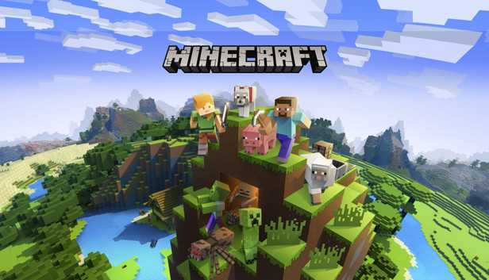

waarom mincraft zo veel spelers heeft
De reden waarom mincraft zo leuk is omdat iemand echt alles wat ze willen kunnen doen. dit zorg er vor dat mincraft een diverse player base heeft opgebouwd waardoor. ze veel grotere market reach hebben kunnen behaalt wat help met de monitezetion van de gamen. en omdat je zoveel verschillende dingen kan doen zorgt het er voor dat de game zeer replayebole is
hoe verdient mojang hun geld terug?
De manier hoe mojang hun game monitize bestaad uit 2 delen het enen is het kopen van de game dat is duurder op java, omdat het daar een aankoop is zonder micro transacties,maar bedrock is goedkoper maar ze hebben alle mods achter een paywall gezet. dit zorgt er voor dat mojang goed geld verdient aan bedrock en java maar bedrock is beter financie dan java, omdat als mesen steeds meer kunnen koper voor meer dingen gaan ze na een tijde=je zo veel kpen dat het meer is dan de 1 keer aan koop voor java.